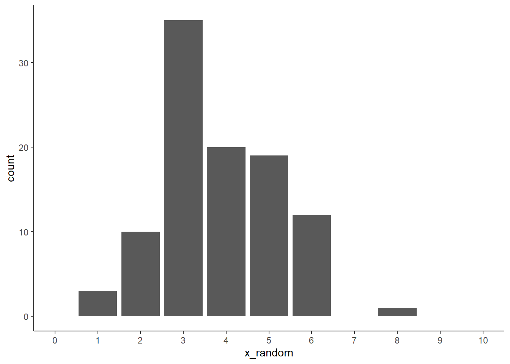

초기하분포(Hypergeometric Distribution)에 관련된 R 명령어 설명
위에 링크로 달아놓았지만, ChatGPT에게 초기하분포에 관련된 r명령어를 묻고, 명령어는 알지만 더 자세한 사용법을 알고 싶을때는 프로그램에서 명령어에 커서를 두고 F1을 누르면 설명이 나옵니다.
# 성공적인 요소 20개, 실패적인 요소 80개, 총 15개의 요소를 뽑는 경우m <-20n <-80k <-15# 확률밀도함수: 5개의 성공적인 요소를 뽑을 확률dhyper(5, m, n, k)
[1] 0.1007633
# 누적분포함수: 5개 이하의 성공적인 요소를 뽑을 누적 확률phyper(5, m, n, k)
[1] 0.9538525
# 분위수 함수: 누적 확률 0.5에 해당하는 성공적인 요소의 수qhyper(0.5, m, n, k)
[1] 3
# 랜덤 샘플링: 위 조건을 갖는 초기하분포에서 10개의 샘플 생성rhyper(10, m, n, k)
[1] 2 5 3 5 0 4 2 2 0 4
# 초기하분포의 확률질량함수 그리기m <-20# 성공 가능한 항목의 수n <-30# 실패 가능한 항목의 수k <-10# 추출되는 항목의 총 수x_values <-0:min(k, m) # 가능한 성공 횟수의 범위probabilities <-dhyper(x_values, m, n, k) # 확률 질량 함수 계산plot(x_values, probabilities, type ="h", lwd =2, col ="blue",main ="Hypergeometric Distribution",xlab ="Number of Successes", ylab ="Probability") # 확률 분포 그래프 그리기
# 확률질량 또는 매개변수 N, n, k가 있는 초기하분포와 관련된 분포함수를 그리기library(LearningStats)N=20;n=12;k=5plotHyper(N,n,k,type="d")
Probability mass and distribution function associated with a H(N,n,k)
4개의 불량품이 섞여있는 20개의 부품이 들어있는 상자로부터 3개의 부품을 꺼내었을 때의 불량품의 수를\(X\)라 하자. \(E(X)\)와 \(Var(x)\)를 구하여라.
# 파라미터 설정M <-20# 전체 요소의 수n <-4# 성공 요소의 수N <-3# 시행 횟수# 확률 질량 함수 계산k <-seq(max(0, N - (M-n)), min(n, N))pmf <-dhyper(k, n, M - n, N)# 그래프 그리기plot(k, pmf, type="h", lwd=2, col="blue",xlab="Number of Successes", ylab="Probability",main="Hypergeometric Distribution PMF")

# 평균과 분산 계산mean <- N * n / Mvariance <- N * n * (M - n) * (M - N) / (M^2* (M -1))# 결과 출력mean
# 임의추출: 성공 확률이 0.2인 기하분포로부터 5개 샘플 생성rgeom(5, prob)
[1] 2 6 5 3 4
# 확률질량함수par(mar=c(5.1, 4.1, 4.1, 7),xpd=TRUE)plot(0,type="n", xlim=c(0,100),ylim=c(0,1),ann=FALSE)p=c(0.1,0.3,0.5,0.7,0.9)for (i in1:length(p)){ x=0:100 y=dgeom(x,p[i])points(x,y,type="l",col=rainbow(length(p))[i])}title(main="PMF of geom",xlab="x",ylab="p(x)",cex.main=2,cex.lab=1.2)box("outer",col="gray")legend("topright",inset=c(-0.15,0), legend=paste("p=",p),col=rainbow(length(p)),lty=1)
# 누적분포함수par(mar=c(5.1, 4.1, 4.1, 7),xpd=TRUE)plot(0,type="n", xlim=c(0,100),ylim=c(0,1),ann=FALSE)p=c(0.1,0.3,0.5,0.7,0.9)for (i in1:length(p)){ x=0:100 y=pgeom(x,p[i])points(x,y,type="l",col=rainbow(length(p))[i]) }title(main="CMF of binom",xlab="x",ylab="p(x)",cex.main=2,cex.lab=1.2)box("outer",col="gray")legend("topright",inset=c(-0.15,0),legend=paste("p=",p),col=rainbow(length(p)),lty=1)
기하분포 관련 문제
로또복권에 당첨될 확률(3등 이상)은 0.028이다. 매주 복권을 1장씩 산다.
(1) 1년 이내에 당첨될 확률은 얼마인가?
(2) 당첨될 확률이 90% 이상 되기 위해서는 얼마동안 복권을 사야 할까?
(3) 작년 한 해 동안 당첨되지 못하였다. 올해에는 당첨될 확률은?
options(digits=5) # 값을 소수점 5자리까지 출력prob <-0.028pgeom(51, prob) # (1) 누적분포함수 이용, 52회 실행하며 첫 번째 당첨이 발생하기 전에 51번 이하로 실패할 누적확률
[1] 0.77163
qgeom(0.1, prob) # (2) 이 함수의 결과는 오답이며, qgeom은 첫 번째 성공이 발생하기 전까지의 실패 확률이 90% 이하가 되는 지점을 찾는 것을 의미하며, 적어도 한 번 성공할 확률이 90% 이상이 되기 위한 시도 횟수를 찾는 것과는 다른 접근이며, 문제를 해결하기 위해서는 while 루프 방식의 계산이 적합함
[1] 3
# ChatGPT가 알려준 (2)번 풀이에 대한 코드win_probability <-0.028target_probability <-0.90n <-0# 주 수 카운터current_probability <-0while (current_probability < target_probability) { n <- n +1# 90% 이상 당첨 확률이 될 때까지 반복 current_probability <-1- (1- win_probability)^n}n # 필요한 주 수 출력
[1] 82
pgeom(51, prob) # (3) 기하분포의 무기억성의 성질에 의해 (1)과 같은 확률임